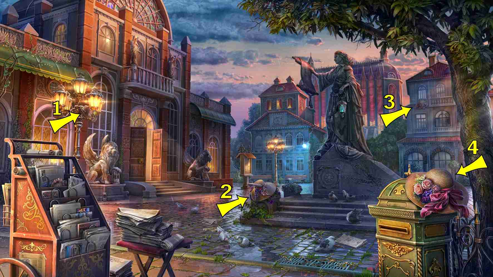
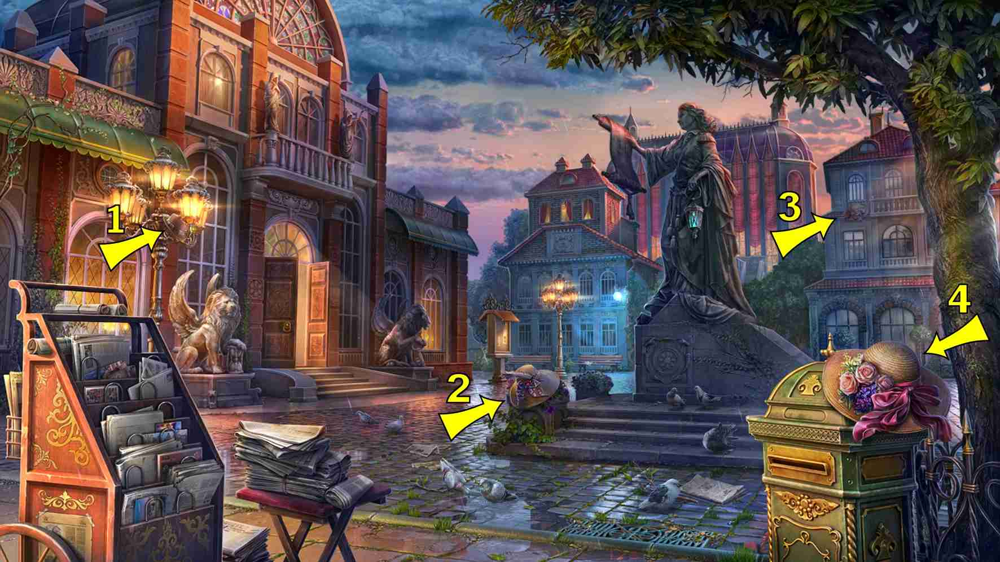

6 items:
- Over left balcony statue of left building


3 items:
- Add: right bench middle building
- Right bottom window left background building
- Front of main building above double doors
1 items:
- Left building, above right green awning
1 items:
- Left building - upper left window left of balcony